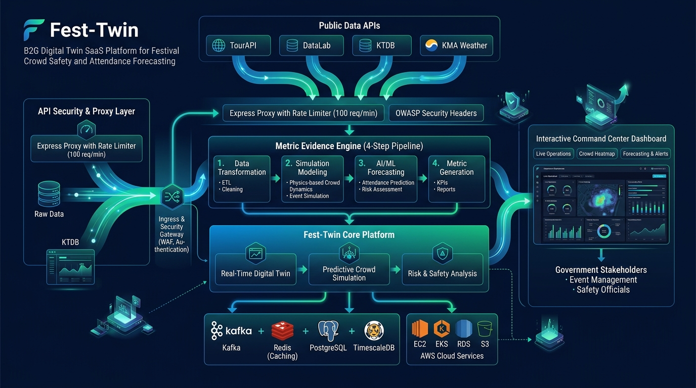
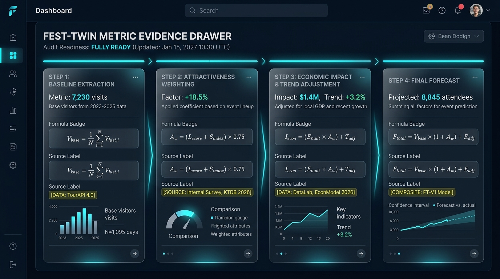
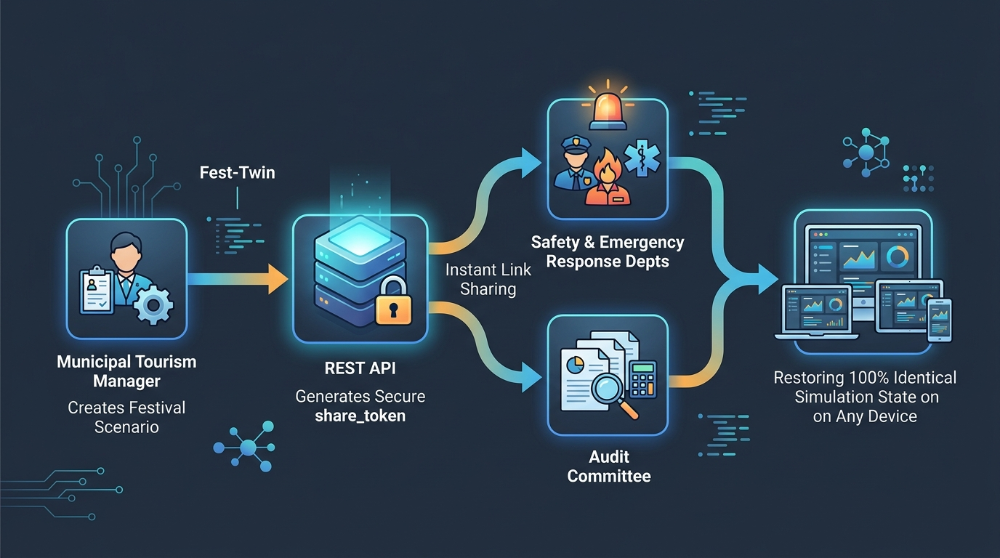

실데이터 기반 B2G 축제·행사 사전 진단 및 디지털 트윈 시뮬레이터
축제·행사 기획 단계에서 발생하는 불확실한 방문객 추정과 예산 근거 부재 문제를 실공공데이터 기반 디지털 트윈으로 해결하는 플랫폼입니다.
발표자: Fest-Twin 개발팀
대상: B2G 사업 평가위원 및 지자체 문화관광/안전 담당자
감(感) 위주 추정 탈피, 감사(Audit) 완벽 대응, 부서 간 시나리오 영속 공유 파이프라인 제공.
"이 축제에 예산 5억 원을 투입하면, 방문객은 정말 5만 명이 오나요?"
사전 예측의 신뢰성과 행정 투명성을 극대화한 디지털 트윈
B2G 요구사항을 100% 충족하는 고성능·고보안 인프라

1단계 베이스라인부터 4단계 최종 산출까지 연산 흐름 투명 공개

Step 1: Base_Visitors = Area_m² × Target_Density
Step 2: Weighted_Visitors = Base_Visitors × Budget_Weight(1.15x) × Time_Weight(1.08x)
Step 4: Final_Output = { 예상 방문객(명), 밀집도(명/m²), ROI 파급효과(배) }
• Budget_Weight (1.15x): KTDB / 예산 가중
• Time_Weight (1.08x): TourAPI 4.0 / 시간대 보정
• 경제 파급 계수: 관광데이터랩 카드 소비 객단가 기반
시나리오 공유부터 차세대 소셜 트렌드 연동까지

01. 시나리오 기획 및 저장 ➔ 02. share_token 단일 복원 URL 생성 ➔ 03. 타 부서 및 감사 기관 공유
Naver DataLab Trend & Social Buzz 연동 백엔드 프록시 인터페이스 수용 준비 완료
행정의 신뢰성을 높이는 B2G 표준 사전 진단 플랫폼
정규화 공공 백데이터 모드로 자동 전환되어 100% 서비스 연속성을 보장합니다.
Metric Evidence Drawer의 수식, 계수, 출처 데이터로 행정적 근거를 완벽 증빙합니다.
2단계 Rate Limiter 방어와 0.36ms 캐시 응답, 2,052 TPS 검증으로 안전합니다.